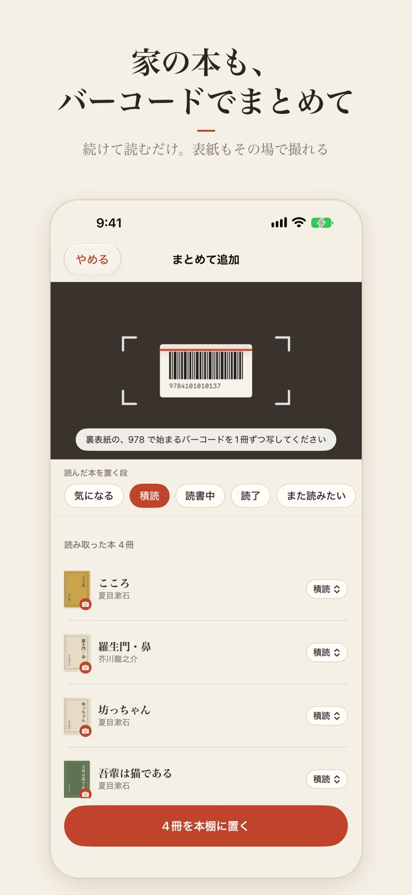
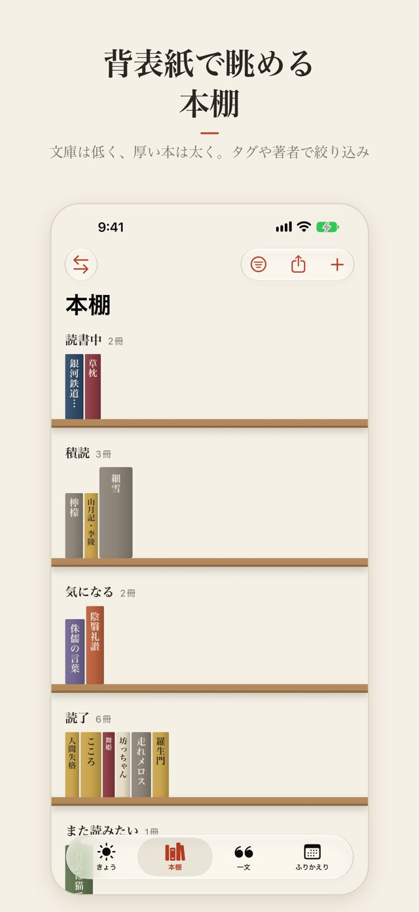
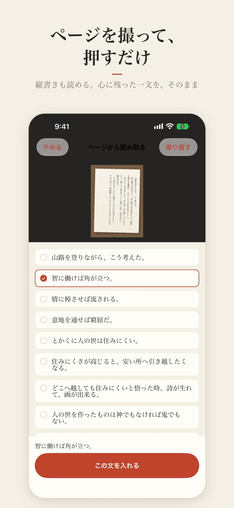
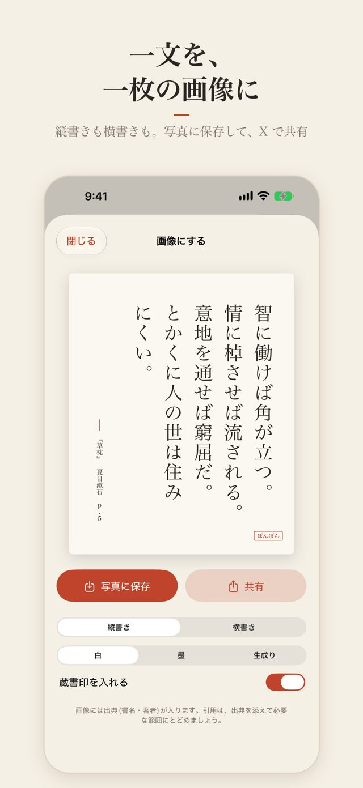

家の本も、バーコードでまとめて
裏表紙のバーコードを続けて読むだけで、何冊でもまとめて本棚へ。表紙の画像がない本は、その場で表紙も撮れます。書名で探して置くこともできます。

表紙でも、背表紙でも
読書中・積読・読了…の段に並べて、読み終えたら長押しで段を移すだけ。背表紙の本棚は、文庫は低く、厚い本は太く。タグや著者で絞り込めます。

ページを撮って、押すだけ
心に残った一文は、手で書き写すほか、ページを撮って読み取った文を押すだけでも残せます。縦書きの文庫も読めます。ページや、誰の言葉かも添えられます。

一文や本棚を、1枚の画像に
残した一文は縦書きの美しい画像に。本棚まるごとや「私を構成する9冊」、1年の読書記録も画像にして、写真に保存したり共有したりできます。
よくある質問
無料ですか?
本棚・一文の記録・iCloud 同期・ウィジェット・書き出しは、ずっと無料です。画像の色や年のふりかえりなどを広げる「ぽんぽん Pro」(任意)があります。
登録は要りますか?
要りません。記録は iPhone と、あなたの iCloud にだけ保存されます。
ほかのアプリから移せますか?
ブクログ・Goodreads・StoryGraph の書き出したファイルから取り込めます。記録はいつでも書き出せます。
作っている人
ぽんぽんは、本が好きな開発者が1人で作っています。ご意見は、アプリの「設定 → ご意見・不具合のご連絡」か、公式アカウントへどうぞ。